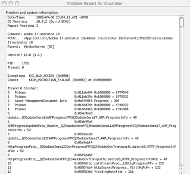

Fault Containment: an unsung hero
As I suffered through the
nth application crash
of the day, I couldn't help thinking of my favorite
underappreciated Java feature: fault containment. Between
try{}catch and the tight memory model, failures tend to
happen close to where the error is, and they can be caught with a
very good chance that there has been no corruption of neighbouring
data structures. So if you're using some sort of editor and one of
the commands has a bug in it, if it's written in Java you usually
get a little pop-up box that says something like "error in
command", and you can carry on working. In C apps, one bad pointer
and you're blown out of the water, with all of your editing lost.
This is particularly bad in systems that use plugins where the
amount of QA is variable. A lot of what motivated the tight memory
model was me having wasted too much of my life tracking down weird
exotic memory smashes, and vowing to never have to waste time on
stuff like that again.